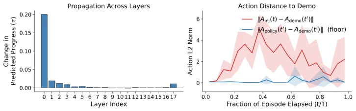
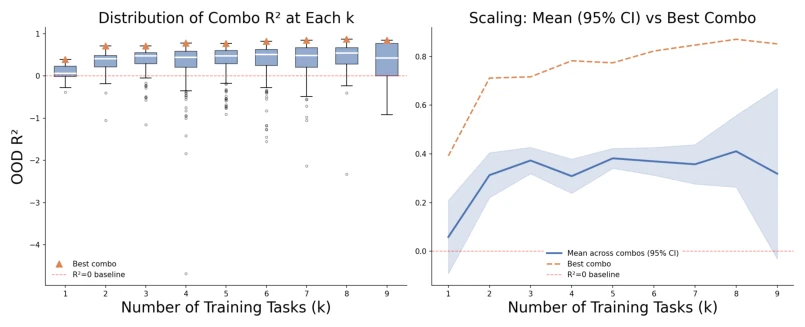
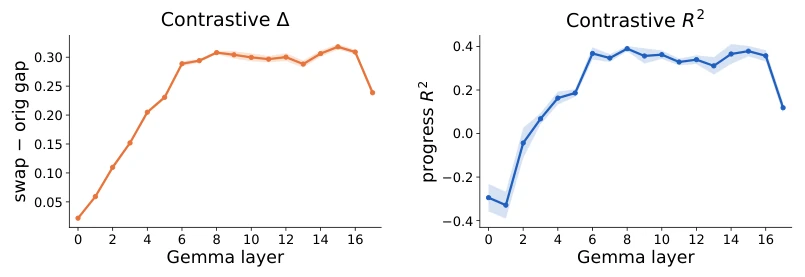
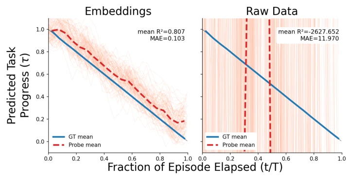

Figure 1: Task progress is linearly readable from π0.5’s internal activations. A linear probe φ(z0) = w⊤z0+b on residual-stream activations z0 from the VLM backbone recovers task progress, the normalized fraction of the trajectory remaining, and supports three downstream analyses: OOD detection, a language-grounding diagnostic, and a steerability study.
Figure 2: Left: Weak decodability of the progress feature across layers of fine-tuned π0.5 (SigLIP, PaliGemma’s Gemma, and the action expert). Right: Probe performance vs. capacity on the first Gemma layer, true labels versus shuffled labels

Figure 5: Left: Predicted progress across Gemma layers i = 0, . . . , 17 after injecting τboost = 0.2 at layer 0 via φ0, read at each subsequent layer by φi. Right: ∥Ainj −AGT∥2 compared against the non-injected baseline ∥Apolicy −AGT∥2, with 95% confidence interval (CI) over 5 rollouts run 5 times each. A successful injection would bring the injected curve close to the policy baseline.
Figure 4: Counterfactual training yields strong decodability at a cost. Progress traces under the original instruction (blue) and Tlang noun-swap (orange). Left: naive layer-0 probe. Right: contrastive probe at layer 10, trained with Tlang counterfactuals labeled τ = 1.0. Bands: 95% CI over 75 rollouts.

Figure 7: The progress probe’s generalization across tasks improves with the number of training tasks. Out-of-distribution R2 of progress probes evaluated on the unseen tasks as a function of the number of training tasks k. Left: distribution of OOD R2 across all combinations of k tasks (box plots), with the best combination (orange triangle) and the R2 = 0 baseline (red dashed) marked. Right: mean across combinations (blue, 95% CI) and the best combination (orange dashed) at each k. The best attainable R2 rises from ≈0.39 at k = 1 to ≈0.85 by k = 8 before saturating, while the mean improves early and then plateaus with growing variance.

Figure 8: Language sensitivity ∆(left) and in-distribution progress R2 (right) for the contrastive probe at each layer. Lines are the mean over 5 seeds, bands ±1 SEM.

Figure 9: Task progress is decodable from VLA embeddings but not from raw observations. Predicted vs. ground truth task progress τ over normalized episode time t/T for a probe trained on π0.5 embeddings (left) and a matching probe trained on raw observations (right). Both probes are trained on 50 Add Condiment episodes and evaluated on 100 out-of-distribution Add Condiment episodes. The embedding probe tracks ground truth (mean R2 = 0.807), while the probe on raw observations fails to generalize (mean R2 = −2627.7, MAE = 11.97).